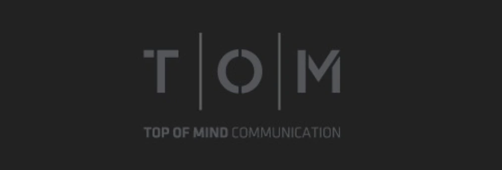

Top of Mind Communication
Head of Coordination & QualityLead 15+ concurrent projects, staffing, margins and quality across 10+ client relationships.
Digital Project Coordinator · Feb 2024–Jul 2025Axel Cruz Machado
Projects, programs, operations.
Digital project management · Program management · Client delivery
Creative operations · Digital products · Learning platforms
Budgeting & margins · Resource planning · QA/UAT · AI-assisted workflows

Lead 15+ concurrent projects, staffing, margins and quality across 10+ client relationships.
Digital Project Coordinator · Feb 2024–Jul 2025
Founded the studio, secured 15+ engagements and led websites and learning platforms from proposal through support.
Part-time during 2023–2024Built HR processes for a 500+ agent organization. Helped one HSBC-linked operation grow from 3 to 50+ agents.
I match the brief to people and capacity. At TOM that means balancing up to 25 specialists across software, creative production and learning.
Team mapI turn requests into options with costs, owners and approval dates. At Costco that work grew one video into 12 location-related projects.
Client stakeholdersI agree acceptance criteria with the client, assign defects and verify fixes with QA. This helped restore the Hino and Edenred platforms within 14 days.
Delivery stagesI connect the product backlog to access, integrations and reporting. At Hino those decisions shaped certification workflows across 38 dealers.
Platform architectureB.Eng., Interactive Technologies and Digital Animation · Universidad del Valle de México, 2017
Project Management · 365 Careers / Udemy, 2026
Spanish · Native / English · C1